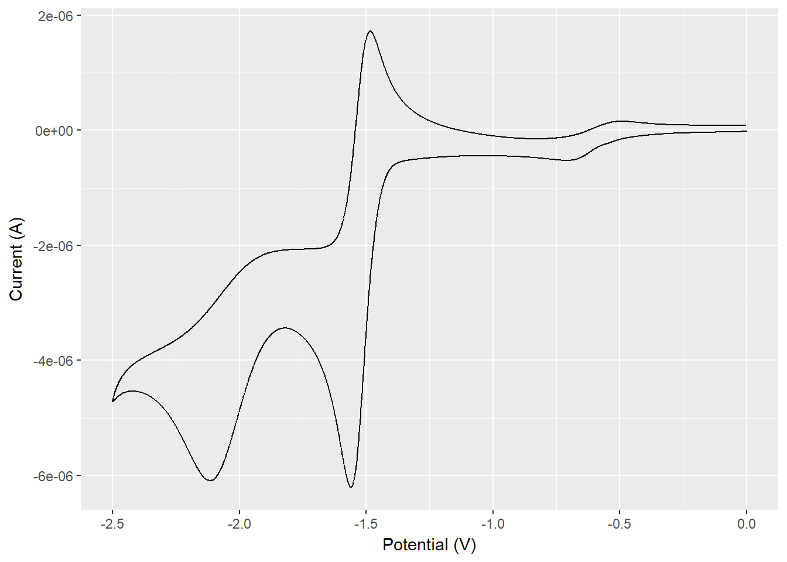
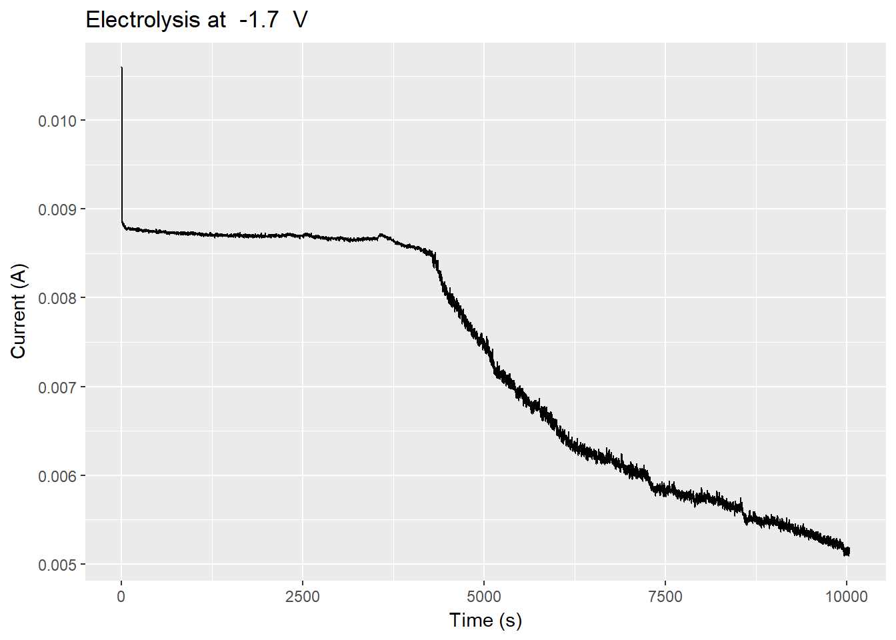
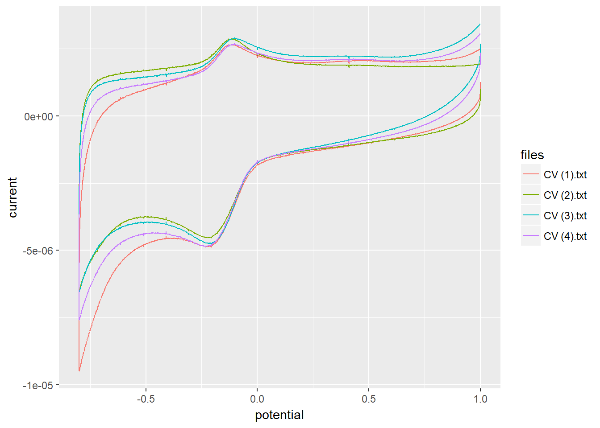

2 Electrochemical methods
To load electrochemical data (i.e. cyclic voltammograms or bulk electrolysis) the echem_read() function can be used. It will try to determine the type of experiment and read it accordingly.1
The package contains a few example files that we will use here. To use your own files, just supply the filename.
2.1 Cyclic voltammetry
CV data can be loaded from a txt-file.
library(osctools)## Loading osctools...
## See https://spoman.github.io/oscbook/ for examples# This chould just as well be the path to your file as a string, i.e.
# file <- "data/cv_example.txt"
file <- system.file("extdata/cv/cv_example.txt", package = "osctools")
cv1 <- echem_read(file)
cv1## Cyclic Voltammetry at 0.1 V/s
## Initial scan polarity: N, Scan segments: 2
## Init E: 0 V, High E: 0 V, Low E: -2.5 V
## Sensitivity: 1e-05, Quiet time: 2 s
##
## # A tibble: 5,000 x 6
## potential current direc change sweep cv
## <dbl> <dbl> <chr> <dbl> <dbl> <dbl>
## 1 0.000 -4.901e-09 neg 0 1 1
## 2 -0.001 -1.236e-08 neg 0 1 1
## 3 -0.002 -1.481e-08 neg 0 1 1
## 4 -0.003 -1.547e-08 neg 0 1 1
## 5 -0.004 -1.641e-08 neg 0 1 1
## # ... with 4,995 more rowsIn case that the file is just a pure CV file without any leading metadata, you will need to specify the type of experiment.
file2 <- system.file("extdata/cv/cv_example4.txt", package = "osctools")
cv2 <- echem_read(file2, type = "CV")The CV objects can be plotted directly for quick assesment. However, they probably need tweaking to your specific need before they are ready for publication.
plot(cv1)
2.2 Electrolysis
The same principles applies to loading and plotting a bulk electrolysis.
elec1 <- echem_read(system.file("extdata/electrolysis/electrolysis_example.txt", package = "osctools"))## Parsed with column specification:
## cols(
## time = col_double(),
## charge = col_double(),
## current = col_double()
## )plot(elec1)
2.3 Loading several files
It is very common to have a folder full of data-files that you want to load into one table. An easy way to do that is by making a list of the filenames and then using purrr::map() to iterate over the file names.
For this example we have a folder containing 4 files.
list.files(path = "data/cv")## [1] "CV (1).txt" "CV (2).txt" "CV (3).txt" "CV (4).txt"We can make a list of the file names and apply echem_read() to all of them.
library(tidyverse)
path <- "data/cv/"
data <- tibble(files = list.files(path = path, pattern = "*.txt"))
# Load all data from the files into the tibble
data <- data %>%
mutate(d = map(paste0(path, files), echem_read)) %>%
unnest()We can then use ggplot2 to plot them all simultaneously.
data %>%
ggplot(aes(potential, current, color = files)) +
geom_path()
If you have problems reading certain files, then please file a Github issue and describe the problem or a pull request with a suggested solution. Remember to add a link to the file causing problems.↩